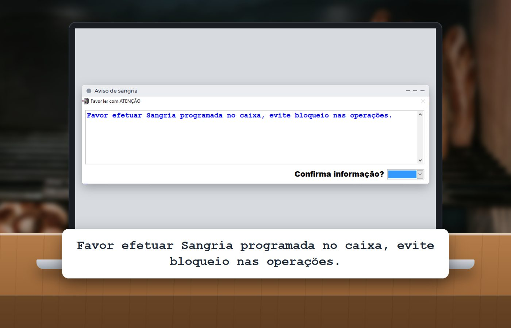
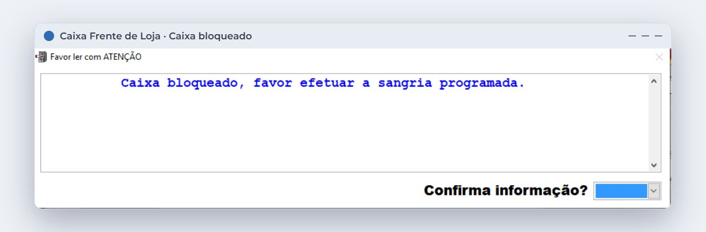
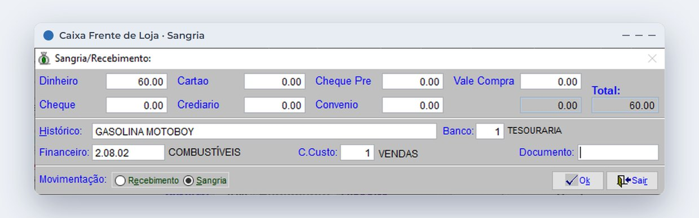

Em 30 segundos
- Sangria é a retirada de dinheiro excedente do caixa para um lugar mais seguro.
- O dinheiro segue presente no balcão: em 2024, 68,9% da população ainda o usava como meio de pagamento, segundo o Banco Central.
- Dois limites resolvem o esquecimento: um valor em que o caixa avisa e outro em que ele bloqueia a baixa de vendas.
- Toda retirada registrada facilita a conferência e ajuda a explicar diferenças no fechamento.
Sete da manhã. Fila no caixa, café saindo, pão quente, troco para todo lado. Pagamento em dinheiro entra e fica na gaveta. Quando o movimento diminui, o operador já nem lembra quanto acumulou, e a retirada fica para depois.
Na maior parte dos dias, nada acontece. O problema é justamente esse: o risco fica invisível até o dia em que deixa de ser.
Por que a sangria é esquecida
Sangria de caixa é a retirada de uma quantia excedente da gaveta para um local mais seguro. Ela reduz a exposição do dinheiro e mantém a movimentação do caixa organizada para o fechamento.
O Pix mudou a rotina, mas o dinheiro não saiu do balcão.
da população ainda usava dinheiro em espécie como meio de pagamento em 2024, e 22% o apontavam como o meio mais frequente.Fonte: pesquisa "O brasileiro e sua relação com o dinheiro", do Banco Central, noticiada pelo Tecnoblog. O dado é da população em geral, sem recorte de padarias.
Em uma loja de muitas vendas de valor baixo, como a padaria, o dinheiro se acumula aos poucos e quase ninguém percebe. Sem uma regra, a retirada depende de alguém lembrar no meio da correria.
Os dois limites: um avisa, outro trava
O Caixa Frente de Loja do Prosystem permite configurar dois valores nas preferências. O exemplo abaixo usa R$ 600 e R$ 900, mas cada loja define os seus.
Primeiro limite: o caixa avisa
Quando as vendas em dinheiro chegam ao valor inicial, o sistema mostra um alerta para o operador. A venda continua normalmente, mas ele já sabe que precisa fazer a sangria.

Segundo limite: o caixa bloqueia
Se a sangria não for feita e o valor final for alcançado, o caixa é bloqueado ao finalizar a venda no caixa central. Todas as modalidades de pagamento ficam impedidas de baixa até que a sangria seja realizada.

Como o bloqueio interrompe a baixa de vendas, deixe uma folga entre os dois valores e garanta que sempre haja alguém autorizado a fazer a sangria nos horários de pico. Assim, o controle não vira fila.
Quer esse controle no caixa da sua padaria?
Fale com a ProSystem e veja como configurar os limites e registrar as retiradas no sistema que também cuida do fechamento.
Registrar cada retirada
Fazer a sangria é só metade do processo. A outra metade é deixar registrado quanto saiu, para onde foi e por quê. A mesma tela também é usada no sentido contrário, para o suprimento, quando entra dinheiro para troco.

Esses lançamentos entram na conferência do caixa. Quando o valor contado não bate com o esperado, a diferença é chamada de quebra de caixa. Com as retiradas registradas, fica mais fácil separar um esquecimento de lançamento de um problema que precisa ser investigado.
Como definir as regras na sua padaria
- Levante o movimento em dinheiro por turno. Olhe alguns dias de fechamento e veja quanto entra em espécie nos horários de pico.
- Defina o limite de aviso. Escolha um valor que a loja considere seguro manter no caixa e que não dispare o alerta o tempo todo.
- Defina o limite de bloqueio. Ele precisa dar tempo de reação depois do aviso, sem permitir que o dinheiro se acumule demais.
- Escolha quem faz a sangria e para onde vai o dinheiro. Responsável e destino claros evitam improviso.
- Confira no fechamento. Compare sangrias, suprimentos e valor contado a cada troca de turno.
Para o restante da rotina, veja também como calcular o custo real de cada produto.
Perguntas frequentes
O que é sangria de caixa?
É a retirada de uma quantia excedente de dinheiro do caixa para um local mais seguro, registrada para que o valor seja considerado na conferência e no fechamento.
Qual a diferença entre sangria e suprimento?
A sangria retira dinheiro do caixa. O suprimento coloca dinheiro no caixa, normalmente para formar troco.
O que é quebra de caixa?
É a diferença entre o valor esperado e o valor contado no caixa. Pode ser positiva ou negativa, e o registro das movimentações ajuda a identificar a origem.
Qual é o valor ideal para fazer sangria na padaria?
Não existe um valor único. Ele depende do movimento em dinheiro, do horário e da política de segurança da loja. Os limites devem ser definidos com base nos fechamentos de cada turno.
O sistema pode impedir vendas enquanto a sangria não é feita?
Sim. No Prosystem, o caixa pode ser configurado para avisar em um valor e bloquear a baixa de vendas em outro, até que a sangria seja realizada.
Fontes
- Alerta de sangria obrigatória (Universidade Prosystem)
- Sangrias e suprimentos de caixa (Universidade Prosystem)
- Pix passa dinheiro e cartão como meio de pagamento mais usado no Brasil (Tecnoblog, sobre pesquisa do Banco Central)
Conteúdo informativo, atualizado em 30 de outubro de 2026. Telas reais do Prosystem, com dados de exemplo. Os valores de R$ 600 e R$ 900 são exemplos e devem ser ajustados à realidade de cada loja.